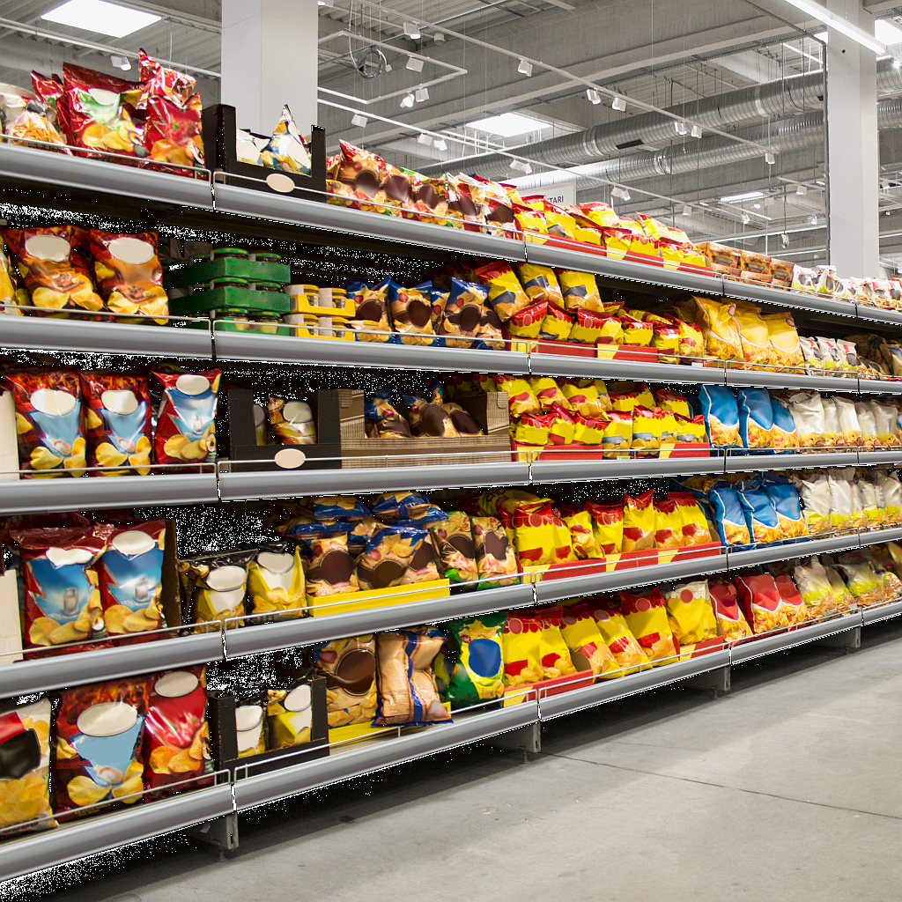
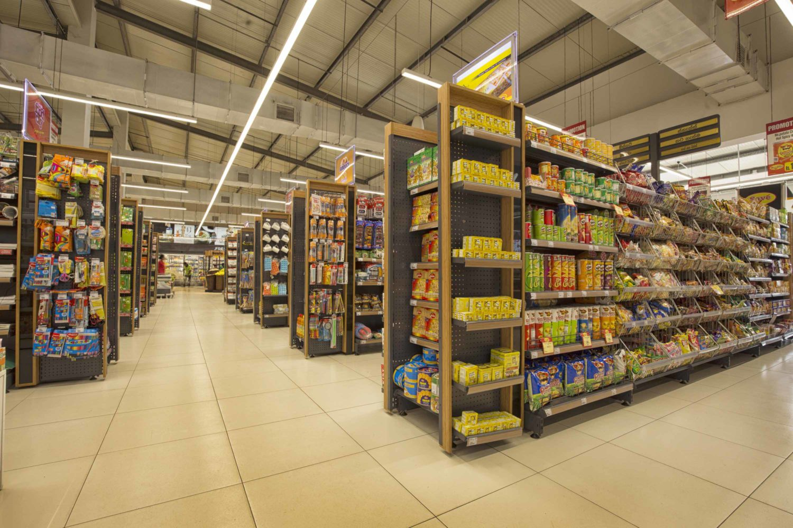

Grocies:Paris

Tucked away in the heart of Paris, our cozy grocery store welcomes you with open arms and a smile. From its inviting storefront to its carefully selected goodies, it's a warm haven for food lovers seeking both quality and charm. Step inside and let yourself be enveloped in a world of fresh produce, artisanal treats, and friendly faces. Whether you're after gourmet cheeses or organic veggies, our Parisian branch is here to make your culinary journey a delight. Come on in and experience the joy of shopping with us!
Grocies:Amsterdam

Nestled in the heart of Amsterdam, our cozy grocery store beckons with its friendly vibe and welcoming atmosphere. From its charming facade to its thoughtfully curated selection, it's a beloved spot for foodies seeking quality and comfort. Step inside and feel the warmth of a community hub, where fresh produce, local delights, and smiling faces await. Whether you crave Dutch cheeses or organic goodies, our Amsterdam branch is your go-to destination for a delightful shopping experience.
Grocies:Colombo

There's no place like home, especially when it comes to our cozy grocery store nestled in the heart of Colombo. Radiating warmth and friendliness from its vibrant exterior, it's a beloved destination for food enthusiasts seeking quality and diversity. Step inside and feel the energy of a local gathering place, where fresh produce, exotic spices, and welcoming smiles await. Whether you're in the mood for traditional Sri Lankan flavors or international delights, our Colombo branch is your go-to spot for a delightful shopping experience. Join us and experience the comfort of home in every aisle!
The Services we Offer
| Services | Occasions | Why us? |
|---|---|---|
| Catering |
|
We serve only the tastiest foods as well as serving functions of all sizes and occasions on very short notice |
| Deliveries |
|
Need to get something to your friend? or need a delivery service for your businesses in a local area? in both cases just contact us! and well make sreu your packages get ther on time |
| Event Plannning | Any type of event! | Make your special days even more special by letting us take care of the hard part while you get to sit back and enjoy! |
| Looking for something more specific? get in touch | ||